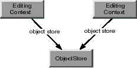
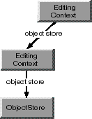
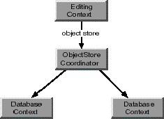

Extends:
next.eo.ObjectStore
| objectsWithFetchSpecification | Fetches objects from an external store. |
| insertObject | Registers a new object to be inserted into the parent ObjectStore. |
| deleteObject | Registers that an object should be removed from the parent ObjectStore when changes are saved. |
| lockObject | Attempts to lock an object in the external store. |
| hasChanges | Returns true if any of the receiver's enterprise objects have been modified.
|
| saveChanges | Commits changes made in the receiver to the parent ObjectStore. |
| revert | Removes everything from the undo stack, discards all insertions and deletions, and restores updated objects to their original values. |
| objectForGlobalID | Given a globalID, returns its associated object. |
| globalIDForObject | Given an object, returns its globalID. |
| setDelegate | Sets the receiver's delegate. |
| parentObjectStore | Returns the receiver's parent ObjectStore. |
| rootObjectStore | Returns the receiver's root ObjectStore. |
All objects fetched from an external store are registered in an EditingContext along with a global identifier (GlobalID) that's used to uniquely identify each object to the external store. The EditingContext is responsible for watching for changes in its objects (using the Observing interface) and recording snapshots for object-based undo. A single enterprise object instance exists in one and only one EditingContext, but multiple copies of an object can exist in different EditingContexts. Thus object uniquing is scoped to a particular EditingContext.
The other class that plays a significant role in object graph management is ObserverCenter. ObserverCenter provides a notification mechanism for an observing object to find out when another object is about to change its state. "Observable" objects (typically all enterprise objects) are responsible for invoking willChange prior to altering their state (in a "set" method, for instance). Objects (such as instances of EditingContext) can add themselves as observers to the objects they care about in the ObserverCenter. They then receive a notification (as an objectWillChange message) whenever an observed object invokes willChange.
The objectWillChange method is defined in the Observing interface. Through EditingContext's superclass, ObjectStore, EditingContext implements the Observing interface. For more information about the object change notification mechanism, see the Observing interface specification.
EditingContext editingContext = new EditingContext();
This creates an editing context that's connected to the default ObjectStoreCoordinator. You can change this default setting by initializing an EditingContext with a particular parent ObjectStore. This is useful if you want your EditingContext to use a different ObjectStoreCoordinator than the default, or if your EditingContext is nested. For example, the following code excerpt initializes childEditingContext with a parent object store parentEditingContext:
EditingContext parentEditingContext; // Assume this exists.
EditingContext childEditingContext = new EditingContext(parentEditingContext);
For more discussion of working programmatically with EditingContexts, see the chapter "Application Configurations" in the Enterprise Objects Framework Developer's Guide.
EditingContext editingContext; // Assume this exists.
String entityName; // Assume this exists.
FetchSpecification fspec;
ObjectStoreCoordinator rootStore;
DatabaseContext dbContext;
Adaptor adaptor;
AdaptorContext adContext;
fspec = new FetchSpecification(entityName, null, null);
rootStore = (ObjectStoreCoordinator)editingContext.rootObjectStore();
dbContext = (DatabaseContext)rootStore.objectStoreForFetchSpecification(fspec);
adaptor = dbContext.database().adaptor();
adContext = dbContext.adaptorContext();
This example first creates a fetch specification, providing just the entity name as an argument. Of course, you can use a fetch specification that has non-null values for all of its arguments, but only the entity name is used by the ObjectStore objectStoreForFetchSpecification method. Next, the example gets the editing context's ObjectStoreCoordinator using the EditingContext method rootObjectStore. rootObjectStore returns an ObjectStore and not an ObjectStoreCoordinator, because it's possible to substitute a custom object store in place of an object store coordinator. Similarly, the ObjectStoreCoordinator method objectStoreForFetchSpecification returns a CooperatingObjectStore instead of a DatabaseContext because it's possible to substitute a custom cooperating object store in place of a database context. If your code performs any such substitutions, you should alter the above code example to match your custom object store's API. See the class specifications for ObjectStore, ObjectStoreCoordinator, and CooperatingObjectStore for more information.
An EditingContext's ObjectStoreCoordinator can have more than one set of database and adaptor level objects. Consequently, to get a database context from the object store coordinator, you have to provide information that the coordinator can use to choose the correct database context. The code example above provides a FetchSpecification using the method objectStoreForFetchSpecification, but you could specify different criteria by using one of the following ObjectStoreCoordinator methods instead:
| Method | Description |
|---|---|
cooperatingObjectStores
| Returns an array of the ObjectStoreCoordinator's cooperating object stores. |
objectStoreForGlobalID
| Returns the cooperating object store for the enterprise object identified by the provided GlobalID. |
objectStoreForObject
| Returns the cooperating object store for the provided enterprise object. |
After you have the database context, you can get the corresponding Adaptor and AdaptorContext as shown in the example above.
You can augment the basic configuration of an EditingContext and its parent ObjectStore in several different ways. For example, multiple EditingContexts can share the same ObjectStore, one EditingContext can act as an ObjectStore for another, and so on. The most commonly used scenarios are described in the following sections.


Figure 2 Nested EditingContexts
When an object is fetched into a nested EditingContext, it incorporates any uncommitted changes that were made to it in its parent EditingContext. For example, suppose that in one panel you have a list of employees that allows you to edit salaries, and that the panel includes a button to display a nested panel where you can edit detail information. If you edit the salary in the parent panel, you see the modified salary in the nested panel, not the old (committed) salary from the database. Thus, conceptually, nested EditingContexts fetch through their parents.
EditingContext overrides several of ObjectStore's methods:
setDefaultParentObjectStore.For a description of how to implement nested EditingContexts, see the chapter "Application Configurations" in the Enterprise Objects Framework Developer's Guide.

Figure 3 An EditingContext Containing Objects from Multiple Sources
In writing an application, it's likely that you'll use combinations of the different scenarios described in the above sections.
objectsWithFetchSpecification method. This method takes a fetch specification and returns an array of objects. A fetch specification includes the name of the entity for which you want to fetch objects, the qualifier (query) you want to use in the fetch, and the sort order in which you want the objects returned (if any).
insertedObjects, deletedObjects, and updatedObjects methods. Each method returns an array containing the objects that have been inserted, deleted, and updated, respectively. The hasChanges method returns true or false to indicate whether any of the objects in the object graph have been inserted, deleted, or updated.
undoredorevertundo asks the EditingContext's UndoManager to reverse the latest changes to objects in the object graph. redo asks the UndoManager to reverse the latest undo operation. revert clears the undo stack, discards all insertions and deletions, and restores updated objects to their last committed (saved) values. The undo and revert methods are also discussed in the context of managing the object graph, below.
saveChanges method commits changes made to objects in the object graph to an external store. When you save changes, EditingContext's lists of inserted, updated, and deleted objects are flushed.Upon a successful save operation, the EditingContext's parent ObjectStore broadcasts an ObjectsChangedInStoreNotification. Peers of the saved EditingContext receive this notification and respond by synchronizing their objects with the committed versions.
At different points in your application, you might want to do the following:
You use the EditingContext methods refaultObjects and refaultObject to break reference cycles between your enterprise objects. For example, suppose you have an Employee object that has a to-one relationship to its Department, and the Department object in turn has an array of Employee objects. This circular reference constitutes a reference cycle, which you can break using the refault... methods.
refault... methods with caution, since refaulting an object doesn't remove the object snapshot from the undo stack. Objects that have been newly inserted or deleted should not be refaulted. In general, it's safer to use refaultObjects than it is to use refaultObject since refaultObjects only refaults objects that haven't been inserted, deleted or updated. refaultObject doesn't make this distinction, so you should only use it when you're sure you know what you're doing.If you want to reset your EditingContext and free all of its objects, do the following:
EditingContext editingContext; // Assume this exists.
editingContext.revert(); // Discard uncommitted changes.
editingContext.refaultObjects();
Note that you must remove any other references to enterprise objects in the EditingContext for them to actually be freed. For example, to clear a display group that references a list of enterprise objects, you'd do something like the following:
displayGroup.setObjectArray(null);
Using the invalidate... methods (described below) also has the effect of breaking reference cycles, but these methods have a more far-reaching effect. It's not recommended that you use them simply to break reference cycles.
undo
revert, which removes everything from the undo stack, discards all insertions and deletions, and restores updated objects to their last committed values. If you just want to discard uncommitted changes but you don't want to sacrifice the original values from the database cached in memory, use the revert method.
invalidate... methods, described in ""Discarding the View of Objects Cached in Memory"."
setRefreshesRefetchedObjects. Invoking setRefreshesRefetchedObjects with the argument true causes existing objects to be overwritten with fetched values that have been changed. Alternatively, you can use the DatabaseContext delegate method databaseContextShouldUpdateCurrentSnapshot.
Normally, when you set a FetchSpecification to refresh using setRefreshesRefetchedObjects, it only refreshes the objects you're fetching. For example, if you refetch employees, you don't also refetch the employees' departments. However, if you use the PrefetchingRelationshipHintKey with a FetchSpecification in the DatabaseContext method objectsWithFetchSpecification, the refetch is propagated for all of the fetched objects' relationships that are specified for the hint. For more discussion of this topic, see the DatabaseContext class specification.
Refreshing refetched objects only affects the objects you specify. If you want to refetch your entire object graph, you can use the EditingContext invalidate... methods, described below.
undo or revert to selectively discard the changes you've made to enterprise objects. Using these methods preserves the original cache of values fetched from the database. But what if you want to flush your in-memory object view all together-in the most likely scenario, to see changes someone else has made to the database? You can invalidate your enterprise objects using the invalidateAllObjects or the invalidateObjectsWithGlobalIDs method. (You can also use the method refetch, which simply invokes invalidateAllObjects). Unlike fetching with the FetchSpecification method setRefreshesRefetchedObjects set to true (described above), the invalidate... methods result in the refetch of your entire object graph.
The effect of the invalidateAllObjects method depends on how you use it. For example, if you send invalidateAllObjects to an EditingContext, it sends invalidateObjectsWithGlobalIDs to its parent object store with all the globalIDs for the objects registered in it. If the EditingContext is nested, its parent object store is another EditingContext; otherwise its parent object store is typically an ObjectStoreCoordinator. Regardless, the message is propagated down the object store hierarchy. Once it reaches the ObjectStoreCoordinator, it's propagated to the DatabaseContext(s). The DatabaseContext discards the row snapshots for these globalIDs and sends an ObjectsChangedInStoreNotification, thereby refaulting all the enterprise objects in the object graph. The next time you access one of these objects, it's refetched from the database.
Sending invalidateAllObjects to an EditingContext affects not only that context's objects, but objects with the same globalIDs in other EditingContexts. For example, suppose editingContext1 has objectA and objectB, and editingContext2 has objectA, objectB, and objectC. When you send invalidateAllObjects to editingContext1, objectA and objectB are refaulted in both editingContext1 and editingContext2. However, objectC in editingContext2 is left intact since editingContext1 doesn't have an objectC.
If you send invalidateAllObjects directly to the ObjectStoreCoordinator, it sends invalidateAllObjects to all of its DatabaseContexts, which then discard all of the snapshots in your application and refault every single enterprise object in all of your EditingContexts.
The invalidate... methods are the only way to get rid of a database lock without saving your changes.
On the face of it, it may seem like the most reasonable solution would be for the first editing context to just get the desired object in the second editing context and modify the object directly. But this would violate the cardinal rule of keeping each editing context's object graph internally consistent. Instead of modifying the second editing context's object, the first editing context needs to get its own copy of the object. It can then modify its copy without affecting the original. When it saves changes, they're propagated to the original object, down the object store hierarchy. The method that you use to give one editing context its own copy of an object that's in another editing context is faultForGlobalID.
For example, suppose you have a nested editing context configuration in which a user interface displays a list of objects-this maps to the parent editing context. From the list, the user can select an object to inspect and modify in a "detail view"-this maps to the child editing context. To give the child its own copy of the object to modify in the detail view, you would do something like the following:
EditingContext childEC, parentEC; // Assume these exist.
Object origObject; // Assume this exists.
Object newObject;
newObject = childEC.faultForGlobalID(parentEC.globalIDForObject(origObject, childEC));
where origObject is the object the user selected for inspection from the list.
The child can make changes to newObject without affecting origObject in the parent. Then when the child saves changes, origObject is updated accordingly.
This can be illustrated by considering the common scenario in which one object has a relationship to another. For example, suppose an Employee has a relationship to a Department. In the object graph, this relationship is simply expressed as an Employee object having an instance variable for its Department object. The Department object might in turn have an instance variable that's an array of Employee objects. When you manipulate relationships in the object graph (for example, by moving an Employee to a different Department), Enterprise Objects Framework changes the appropriate relationship references. For example, moving an Employee to a different Department changes the Employee's department instance variable and adds the Employee to the new Department's employee array. When you save your changes to the database, Enterprise Objects Framework knows how to translate these object graph manipulations into database operations.
Just as you need to maintain the internal consistency of an EditingContext's object graph, you should never directly modify the objects in one EditingContext from another EditingContext. If you do so, you risk creating major synchronization problems in your application. If you need to access the objects in one EditingContext from another, use the method faultForGlobalID, as described in "Working with Objects Across Multiple EditingContexts." This gives the receiving EditingContext its own copy of the object, which it can modify without affecting the original. Then when it saves its changes, the original is updated accordingly.
One of the implications of needing to maintain the consistency of your object graph is that you should never copy an enterprise object (though you can snapshot its properties), since this would be in conflict with uniquing. Uniquing dictates that an EditingContext can have one and only one copy of a particular object. For more discussion of uniquing, see the chapter "Behind the Scenes" in the Enterprise Objects Framework Developer's Guide. Similarly, your enterprise objects shouldn't override the equals method (inherited from CustomObject, which inherits the method from next.util.NextObject). Enterprise Objects Framework relies on the inherited next.util.NextObject implementation to check instance equality rather than value equality.
encodeWithCoder, and by providing a constructor that takes a next.util.Coder object.
The enterprise object simply passes on responsibility for archiving and unarchiving itself to the EditingContext class, by invoking the encodeObjectWithCoder and initObjectWithCoder static methods. The EditingContext takes care of the rest. For more discussion of encodeWithCoder and the corresponding constructor, see the Coding interface specification in the Foundation Framework Reference.
EditingContext includes two additional methods that affect the archiving and unarchiving of objects: setUsesContextRelativeEncoding and usesContextRelativeEncoding. When you use context relative encoding, it means that enterprise objects that archive themselves using the EditingContext encodeObjectWithCoder method archive their current state (that is, all of their class properties) only if they (the objects) are marked as inserted or updated in the EditingContext. Otherwise, they archive just their globalID's since their state matches what's stored in the database and can be retrieved from there. If usesContextRelativeEncoding returns false, it means the current state will always be archived, even if the enterprise object is unmodified. The default is false for OpenStep applications, and true for WebObjects applications.
next.eo.EditingContext()
public next.eo.EditingContext(next.eo.ObjectStore anObjectStore)
Creates a new EditingContext object. If anObjectStore is provided, initializes the receiver with anObjectStore as its parent ObjectStore. If no argument is provided, the new EditingContext has as its parent ObjectStore the default parent ObjectStore. For more discussion of parent ObjectStores, see "Other Classes that Participate in Object Graph Management" in the class description.
See also:
parentObjectStore, defaultParentObjectStore
defaultParentObjectStore()
Returns the default parent ObjectStore. Normally this is the ObjectStoreCoordinator returned from the invocation ObjectStoreCoordinator.defaultCoordinator().
See also:
setDefaultParentObjectStore
encodeObjectWithCoder(java.lang.Object object, next.util.Coder encoder)
Invoked by an enterprise object object to ask the EditingContext to encode object using encoder. For more discussion of this subject, see "Using EditingContext to Archive Custom Objects in Web Objects Framework" in the class description.
See also:
initObjectWithCoder, usesContextRelativeEncoding
initObjectWithCoder(java.lang.Object object, next.util.Coder decoder)
Invoked by an enterprise object object to ask the EditingContext to initialize object from data in decoder. For more discussion of this subject, see "Using EditingContext to Archive Custom Objects in Web Objects Framework" in the class description.
See also:
encodeObjectWithCoder, usesContextRelativeEncoding
setDefaultParentObjectStore(next.eo.ObjectStore store)
Sets the default parent ObjectStore to store. You use this method before loading a nib file to change the default parent ObjectStores of the EditingContexts in the nib file. The object you supply for store can be a different ObjectStoreCoordinator or another EditingContext (if you're using a nested EditingContext). After loading a nib with an EditingContext substituted as the default parent ObjectStore, you should restore the default behavior by setting the default parent ObjectStore to null.
This substitution is global until it is changed again. For more discussion of this topic, see the chapter "Application Configurations" in the Enterprise Objects Framework Developer's Guide.
See also:
defaultParentObjectStore
setSubstitutionEditingContext(next.eo.EditingContext anEditingContext)
Assigns anEditingContext as the EditingContext to substitute for the one specified in a nib file you're about to load. Using this method causes all of the connections in your nib file to be redirected to anEditingContext. This can be useful when you want an interface loaded from a second nib file to use an existing EditingContext. After loading a nib with a substitution EditingContext, you should restore the default behavior by setting the substitution EditingContext to null.
This substitution is global until it is changed again. For more discussion of this topic, see the chapter "Application Configurations" in the Enterprise Objects Framework Developer's Guide.
See also:
substitutionEditingContext
setUsesContextRelativeEncoding(boolean flag)
Sets according to flag whether an EditingContext uses context-relative encoding. For more discussion of this subject, see "Using EditingContext to Archive Custom Objects in Web Objects Framework" in the class description.
See also:
usesContextRelativeEncoding, encodeObjectWithCoder, initObjectWithCoder
substitutionEditingContext()
Returns the substitution EditingContext if one has been specified. Otherwise returns null.
See also:
setSubstitutionEditingContext
usesContextRelativeEncoding()
Returns true to indicate that the EditingContext uses context relative encoding, false otherwise. For more discussion of this subject, see "Using EditingContext to Archive Custom Objects in Web Objects Framework" in the class description.
See also:
setUsesContextRelativeEncoding, encodeObjectWithCoder, initObjectWithCoder
addEditor(java.lang.Object anObject)
Adds editor to the receiver's set of Editors. For more explanation, see the method description for editors and the Editors interface specification.
See also:
removeEditor
arrayFaultWithSourceGlobalID(next.eo.GlobalID globalID,
java.lang.String aString, next.eo.EditingContext anEditingContext)
Overrides the implementation inherited from ObjectStore. If the objects associated with the GlobalID globalID are already registered in the receiver, returns those objects. Otherwise, propagates the message down the object store hierarchy, through the parent object store, ultimately to the associated DatabaseContext. The DatabaseContext creates and returns a to-many fault.
When a parent EditingContext receives this on behalf of a child EditingContext and the GlobalID globalID identifies a newly inserted object in the parent, the parent returns a copy of its object's relationship array with the member objects translated into objects in the child EditingContext.
For more information on faults, see the ObjectStore, next.eo.DatabaseContext, Fault, and FaultHandler class specifications.
See also:
faultForGlobalID
committedSnapshotForObject(java.lang.Object object)
Returns a dictionary containing a snapshot of object that reflects its committed values (that is, its values as they were last committed to the database). In other words, this snapshot represents the state of the object before any modifications were made to it. The snapshot is updated to the newest object state after a save.
See also:
currentEventSnapshotForObject
currentEventSnapshotForObject(java.lang.Object object)
Returns a dictionary containing a snapshot of object that reflects its state as it was at the beginning of the current event loop. After the end of the current event, this snapshot is updated to hold the modified state of the object.
See also:
committedSnapshotForObject
delegate()
Returns the receiver's delegate.
See also:
setDelegate
deletedObjects()
Returns the objects that have been deleted from the receiver's object graph.
See also:
updatedObjects, insertedObjects
deleteObject(java.lang.Object object)
Specifies that object should be removed from the receiver's parent ObjectStore when changes are committed. At that time, the object will be removed from the uniquing tables.
See also:
deletedObjects
editors()
Returns the receiver's editors. Editors are special-purpose delegate objects that may contain uncommitted changes that need to be validated and applied to enterprise objects before the EditingContext saves changes. For example, interface layer display groups (not next.wo.DisplayGroups) register themselves as editors with the EditingContext of their data sources so that they can save any changes in the key text field. For more information, see the Editors interface specification and the EODisplayGroup class specification in the Objective-C version of the Enterprise Objects Framework Reference.
See also:
addEditor, removeEditor
faultForGlobalID(next.eo.GlobalID globalID,
next.eo.EditingContext anEditingContext)
Overrides the implementation inherited from ObjectStore. If the object associated with the GlobalID globalID is already registered in the receiver, returns that object. Otherwise, propagates the message down the object store hierarchy, through the parent object store, ultimately to the associated DatabaseContext. The DatabaseContext creates and returns a to-one fault.
For example, suppose you want the department object whose deptID has a particular value. The most efficient way to get it is to look it up by its globalID using faultForGlobalID. If the department object is already registered in the EditingContext, faultForGlobalID returns the object (without going to the database). If not, a fault for this object is created, and the object is fetched only when you trigger the fault to fire.
When a parent EditingContext is sent faultForGlobalID on behalf of a child EditingContext and globalID identifies a newly inserted object in the parent, the parent registers a copy of the object in the child.
For more discussion of this method, see the section "Working with Objects Across Multiple EditingContexts" in the class description. For more information on faults, see the ObjectStore, next.eo.DatabaseContext, Fault, and FaultHandler class specifications.
See also:
arrayFaultWithSourceGlobalID
forgetObject(java.lang.Object object)
Removes object from the uniquing tables and causes the receiver to remove itself as the object's observer. This method is invoked whenever an object being observed by an EditingContext is finalized. You should not ever invoke this method directly. The correct way to remove an object from its editing context is to remove every reference to the object by refaulting any object references it (by using refaultObjects or invalidateAllObjects). Also note that this method does not have the effect of deleting an object-to delete an object you should either use the deleteObject method or remove the object from an owning relationship.
globalIDForObject(java.lang.Object object)
Returns the GlobalID for object. All objects fetched from an external store are registered in an EditingContext along with a global identifier (GlobalID) that's used to uniquely identify each object to the external store. If object hasn't been registered in the EditingContext (that is, if no match is found), this method returns null. Objects are registered in an EditingContext using the insertObject method, or, when fetching, with recordObject.
See also:
objectForGlobalID
hasChanges()
Returns true if any of the objects in the receiver's object graph have been modified-that is, if any objects have been inserted, deleted, or updated.
initializeObject(java.lang.Object object, next.eo.GlobalID globalID,
next.eo.EditingContext anEditingContext)
Overrides the implementation inherited from ObjectStore to build the properties for the object identified by globalID. When a parent EditingContext receives this on behalf of a child EditingContext (as represented by anEditingContext), and the globalID identifies an object instantiated in the parent, the parent returns properties extracted from its object and translated into the child's context. This ensures that a nested context "inherits" modified values from its parent EditingContext. If the receiver doesn't have object, the request is forwarded the receiver's parent ObjectStore.
insertedObjects()
Returns the objects that have been inserted into the receiver's object graph.
See also:
deletedObjects, updatedObjects
insertObject(java.lang.Object anObject)
Registers (by invoking insertObjectWithGlobalID) object to be inserted in the receiver's parent ObjectStore the next time changes are saved. In the meantime, object is registered in the receiver with a temporary globalID.
See also:
insertedObjects, deletedObjects, insertObjectWithGlobalID
insertObjectWithGlobalID(java.lang.Object object, next.eo.GlobalID globalID)
Registers a new object identified by globalID that should be inserted in the parent ObjectStore when changes are saved. Works by invoking recordObject, unless the receiver already contains the object. Sends object the message awakeFromFetchInEditingContext. globalID must respond true to isTemporary. When the external store commits object, it re-records it with the appropriate permanent globalID.
It is an error to insert an object that's already registered in an editing context unless you are effectively undeleting the object by reinserting it.
See also:
insertObject
invalidateAllObjects()
Overrides the implementation inherited from ObjectStore to discard the values of objects cached in memory and refault them, which causes them to be refetched from the external store the next time they're accessed. This method sends the message invalidateObjectsWithGlobalIDs to the parent object store with the globalIDs of all of the objects cached in the receiver. When an EditingContext receives this message, it propagates the message down the object store hierarchy. DatabaseContexts discard their snapshots for invalidated objects and broadcast an ObjectsChangedInStoreNotification.
The final effect of this method is to refault all objects currently in memory. The next time you access one of these objects, it's refetched from the database.
To flush the entire application's cache of all values fetched from an external store, use a statement such as the following:
editingContext.rootObjectStore().invalidateAllObjects();
If you just want to discard uncommitted changes but you don't want to sacrifice the values cached in memory, use the EditingContext revert method, which reverses all changes and clears the undo stack. For more discussion of this topic, see the section "Methods for Managing the Object Graph" in the class description.
See also:
refetch, invalidateObjectsWithGlobalIDs
invalidateObjectsWithGlobalIDs(next.util.ImmutableVector globalIDs)
Overrides the implementation inherited from ObjectStore to signal to the parent ObjectStore that the cached values for the objects identified by globalIDs should no longer be considered valid and that they should be refaulted. Invokes processRecentChanges before refaulting the objects. This message is propagated to any underlying ObjectStore, resulting in a refetch the next time the objects are accessed. Any related (child or peer) ObjectStores are notified that the objects are no longer valid. For more discussion of this topic, see the section "Methods for Managing the Object Graph" in the class description.
See also:
invalidateAllObjects
invalidatesObjectsWhenFreed()
Returns true to indicate that the receiver clears and "booby-traps" all of the objects registered with it when the receiver is finalized, false otherwise. The default is true. In this method, "invalidate" has a different meaning than it does in the other invalidate... methods. For more discussion of this topic, see the method description for setInvalidatesObjectsWhenFreed.
isObjectLockedWithGlobalID(next.eo.GlobalID globalID,
next.eo.EditingContext anEditingContext)
Returns true if the object identified by globalID in anEditingContext is locked, false otherwise. This method works by forwarding the message isObjectLockedWithGlobalID to its parent ObjectStore.
See also:
lockObject, lockObjectWithGlobalID, locksObjectsBeforeFirstModification
lockObject(java.lang.Object anObject)
Attempts to lock anObject in the external store. This method works by invoking lockObjectWithGlobalID. Raises an exception if it can't find the globalID for anObject to pass to lockObjectWithGlobalID.
See also:
isObjectLockedWithGlobalID, setLocksObjectsBeforeFirstModification
lockObjectWithGlobalID(next.eo.GlobalID globalID,
next.eo.EditingContext anEditingContext)
Overrides the implementation inherited from ObjectStore to attempt to lock the object identified by globalID in anEditingContext in the external store. Raises an exception if unable to obtain the lock. This method works by forwarding the message lockObjectWithGlobalID to its parent ObjectStore.
See also:
lockObject, isObjectLockedWithGlobalID, setLocksObjectsBeforeFirstModification
locksObjectsBeforeFirstModification()
Returns true if the receiver invokes lockObject(object) to lock object in the external store the first time object is modified.
See also:
setLocksObjectsBeforeFirstModification, isObjectLockedWithGlobalID, lockObject,
lockObjectWithGlobalID
messageHandler()
Returns the EditingContext's message handler. A message handler is a special-purpose delegate responsible for presenting errors to the user. Typically, an interface layer display group (an Objective-C EODisplayGroup, not a next.wo.DisplayGroup) registers itself as the message handler for its EditingContext. For more information, see the MessageHandlers interface specification.
See also:
setMessageHandler
objectForGlobalID(next.eo.GlobalID globalID)
Returns the object identified by globalID, or null if no object has been registered in the EditingContext with globalID.
See also:
globalIDForObject
objectsForSourceGlobalID(next.eo.GlobalID globalID,
java.lang.String name, next.eo.EditingContext anEditingContext)
Overrides the implementation inherited from ObjectStore to service a to-many fault for a relationship named name. When a parent EditingContext receives this on behalf of a child EditingContext and globalID matches an object instantiated in the parent, the parent returns a copy of its relationship array and translates its objects into the child's EditingContext. This ensures that a nested EditingContext "inherits" modified values from its parent EditingContext. If the receiving EditingContext does not have the specified object or if the parent's relationship property is still a Fault, the request is fowarded to its parent ObjectStore.
objectsWithFetchSpecification(next.eo.FetchSpecification aFetchSpecification,
next.eo.EditingContext anEditingContext)
public next.util.ImmutableVector
objectsWithFetchSpecification(next.eo.FetchSpecification aFetchSpecification)
Overrides the implementation inherited from ObjectStore to fetch objects from an external store according to the criteria specified by fetchSpecification and return them in an array. If one of these objects is already present in memory, this method doesn't overwrite its values with the new values from the database. This method throws an exception if an error occurs; the error message indicates the nature of the problem.
When an EditingContext receives this message, it forwards the message to its ObjectStore (typically an ObjectStoreCoordinator). Based on the entity name in fetchSpecification, the ObjectStoreCoordinator in turn forwards the request to the appropriate DatabaseContext. The DatabaseContext then obtains a DatabaseChannel and performs the fetch, registering all fetched objects in anEditingContext.
Invoking this method without providing anEditingContext is the same as invoking objectsWithFetchSpecification with this as the EditingContext.
parentObjectStore()
Returns the ObjectStore from which the receiver fetches and to which it saves objects.
processRecentChanges()
Forces the receiver to process pending insertions, deletions, and updates. Normally, when objects are changed, the processing of the changes is deferred until the end of the current event. At that point, an EditingContext moves objects to the inserted, updated, and deleted lists, delete propagation is performed, undos are registered, and ObjectsChangedInStoreNotification and ObjectsChangedInEditingContextNotification are posted (In an OpenStep application, this usually causes the user interface to update). You can use this method to explicitly force changes to be processed. An EditingContext automatically invokes this method on itself before performing certain operations such as saveChanges.
propagatesDeletesAtEndOfEvent()
Returns true if the receiver propagates deletes at the end of the event in which a change was made, false if it propagates deletes only right before saving changes. The default is true.
See also:
setPropagatesDeletesAtEndOfEvent
recordObject(java.lang.Object anObject, next.eo.GlobalID globalID)
Makes the receiver aware of an object identified by globalID existing in its parent ObjectStore. ObjectStores (such as DatabaseContext) usually invoke this method for each object fetched. When it receives this message, the receiver enters the object in its uniquing table and registers itself as an observer of the object.
redo()
This method forwards a redo message to the receiver's UndoManager, asking it to reverse the latest undo operation applied to objects in the object graph.
See also:
undo
refault()
This method simply invokes refaultObjects.
refaultObject(java.lang.Object object, next.eo.GlobalID globalID,
next.eo.EditingContext anEditingContext)
Overrides the implementation inherited from ObjectStore to refault the enterprise object object identified by globalID in anEditingContext. This method should be used with caution since refaulting an object does not remove the object snapshot from the undo stack. Objects that have been newly inserted or deleted should not be refaulted.
The main purpose of this method is to break reference cycles between enterprise objects. When you are using Java APIs to access Objective-C Enterprise Objects Framework classes, you have to take into consideration the way objects are deallocated on the Objective-C side of the Java Bridge. This means that you might still need to break reference cycles to help keep your application's memory usage in check. For example, suppose you have an Employee object that has a to-one relationship to its Department, and the Department object in turn has an array of Employee objects. You can use this method to break the reference cycle. Note that reference cycles are automatically broken if the EditingContext is finalized. For more discussion of this topic, see the section "Methods for Managing the Object Graph" in the class description.
See also:
refault, refaultObjects
refaultObjects()
Refaults all objects cached in the receiver that haven't been inserted, deleted, or updated. Invokes processRecentChanges, then invokes refaultObject for all objects that haven't been inserted, deleted, or updated. For more discussion of this topic, see the section "Methods for Managing the Object Graph" in the class description.
refetch()
This action method simply invokes the invalidateAllObjects method.
registeredObjects()
Returns the enterprise objects managed by the receiver.
removeEditor(java.lang.Object anObject)
Unregisters editor from the receiver. For more discussion of Editors, see the editors method description and the Editors interface specification.
See also:
addEditor
revert()
Removes everything from the undo stack, discards all insertions and deletions, and restores updated objects to their last committed values. Does not refetch from the database. Note that revert doesn't automatically cause display groups to refetch. Display groups that allow insertion and deletion of objects need to be explicitly synchronized whenever this method is invoked on their EditingContext.
See also:
invalidateAllObjects
rootObjectStore()
Returns the non-EditingContext ObjectStore at the base of the ObjectStore hierarchy (usually an ObjectStoreCoordinator).
saveChanges()
Commits changes made in the receiver to its parent ObjectStore by sending it the message saveChangesInEditingContext. If the parent is an ObjectStore Coordinator, it guides its DatabaseContexts through a multi-pass save operation (see the ObjectStoreCoordinator class specification for more information). If no message handler or delegate is available and a database error occurs, an exception is thrown; the error message indicates the nature of the problem.
saveChangesInEditingContext(next.eo.EditingContext anEditingContext)
Overrides the implementation inherited from ObjectStore to tell the receiver's ObjectStore to accept changes from a child EditingContext. This method shouldn't be invoked directly. It's invoked by a nested EditingContext when it's committing changes to a parent EditingContext. The receiving parent EditingContext incorporates all changes from the nested EditingContext into its own copies of the objects, but it doesn't immediately save those changes to the database. If the parent itself is later sent saveChanges, it propagates any changes received from the child along with any other changes to its parent ObjectStore. Raises an exception if an error occurs; the error message indicates the nature of the problem.
setDelegate(java.lang.Object anObject)
Set the receiver's delegate to be anObject.
See also:
delegate
setInvalidatesObjectsWhenFreed(boolean flag)
Sets according to flag whether the receiver clears and "booby-traps" all of the objects registered with it when the receiver is finalized. If an editing context invalidates objects when it's finalized, it sends a clearProperties message to all of its objects, thereby breaking any cycles between objects that would prevent them from being freed. (When you are using Java APIs to access Objective-C Enterprise Objects Framework classes, you have to take into consideration the way objects are deallocated on the Objective-C side of the Java Bridge. This means that you might still need to break reference cycles to help keep your application's memory usage in check.) This method leaves the objects in a state in which sending them any message throws an exception.
The default is true, and as a general rule, this setting must be true for enterprise objects with cyclic references to be finalized when their EditingContext is finalized. Note that "invalidate" in this method has a different meaning than it does in the other invalidate... methods, which discard object values and refault them.
See also:
invalidatesObjectsWhenFreed
setLocksObjectsBeforeFirstModification(boolean flag)
Sets according to flag whether the receiver invokes lockObject(object) to lock object in the external store the first time object is modified. The default is false. If flag is true, an exception will be thrown if a lock can't be obtained when object invokes willChange. There are two reasons a lock might fail: because the row is already locked in the server, or because your snapshot is out of date. If your snapshot is out of date, you can explicitly refetch the object using a FetchSpecification with setRefreshesRefetchedObjects set to true. To handle the exception, you can implement the DatabaseContext delegate method databaseContextShouldRaiseExceptionForLockFailure.
You should avoid using this method or pessimistic locking in an interactive end-user application (OpenStep or WebObjects). A user might make a change and neglect to save it, thereby leaving the data locked in the server indefinitely. Consider using optimistic locking or application level explicit check-in/check-out instead.
See also:
locksObjectsBeforeFirstModification
setMessageHandler(java.lang.Object handler)
Set the receiver's message handler to be handler.
See also:
messageHandler
setPropagatesDeletesAtEndOfEvent(boolean flag)
Sets according to flag whether the receiver propagates deletes at the end of the event in which a change was made, or only just before saving changes.
If flag is true, deleting an enterprise object triggers delete propagation at the end of the event in which the deletion occurred (this is the default behavior). If flag is false, delete propagation isn't performed until saveChanges is invoked.
You can delete enterprise objects explicitly by using the deleteObject method or implicitly by removing the enterprise object from an owning relationship. Delete propagation uses the delete rules in the ClassDescription to determine whether objects related to the deleted object should also be deleted (for more information, see the ClassDescription class specification and the EnterpriseObject interface specification). If delete propagation fails (that is, if an enterprise object refuses to be deleted-possibly due to a deny rule), all changes made during the event are rolled back.
See also:
propagatesDeletesAtEndOfEvent
setStopsValidationAfterFirstError(boolean flag)
Sets according to flag whether the receiver stops validating after the first error is encountered, or continues for all objects (validation typically occurs during a save operation). The default is true. Setting it to false is useful if the delegate implements editingContextShouldPresentException to handle the presentation of aggregate exceptions.
See also:
stopsValidationAfterFirstError
setUndoManager(next.eo.UndoManager undoManager)
Sets the receiver's UndoManager to undoManager.
See also:
undoManager
stopsValidationAfterFirstError()
Returns true to indicate that the receiver should stop validating after it encounters the first error, or false to indicate that it should continue for all objects.
See also:
setStopsValidationAfterFirstError
undo()
This action method forwards an undo message to the receiver's UndoManager, asking it to reverse the latest uncommitted changes applied to objects in the object graph.
See also:
redo
undoManager()
Returns the receiver's UndoManager.
See also:
setUndoManager
updatedObjects()
Returns the objects in the receiver's object graph that have been updated.
See also:
deletedObjects, insertedObjects
Notifications
The following notifications are declared (except where otherwise noted) and posted by EditingContext.
Notification Object The EditingContextuserInfo Dictionary
| Key | Value |
|---|---|
| updated | A next.util.ImmutableVector of GlobalIDs for objects whose properties have changed. A receiving EditingContext typically responds by refaulting the objects. |
| inserted | A next.util.ImmutableVector of GlobalIDs for objects that have been inserted into the ObjectStore. |
| deleted | A next.util.ImmutableVector of GlobalIDs for objects that have been deleted from the ObjectStore. |
| invalidated | A next.util.ImmutableVector of GlobalIDs for objects that have been turned into Faults. Invalidated objects are those for which the cached view can should no longer be trusted. Invalidated objects should be refaulted so that they are refetched when they're next examined. |
objectWillChange observer notifications are processed, which is usually as the end of the event in which the changes occurred. See the ObjectStore class specification for more information on ObjectsChangedInStoreNotification.
Notification Object The EditingContextuserInfo Dictionary
| Key | Value |
|---|---|
| updated | A next.util.ImmutableVector containing the changed objects |
| deleted | A next.util.ImmutableVector containing the deleted objects |
| inserted | A next.util.ImmutableVector containing the inserted objects |
| invalidated | A next.util.ImmutableVector containing invalidated objects. |
Notification Object The EditingContextuserInfo Dictionary
Key
Value
updated
A next.util.ImmutableVector containing the changed objects
deleted
A next.util.ImmutableVector containing the deleted objects
inserted
A next.util.ImmutableVector containing the inserted objects
Notification Object The EditingContextuserInfo Dictionary None.
Copyright © 1998, Apple Computer, Inc. All rights reserved.